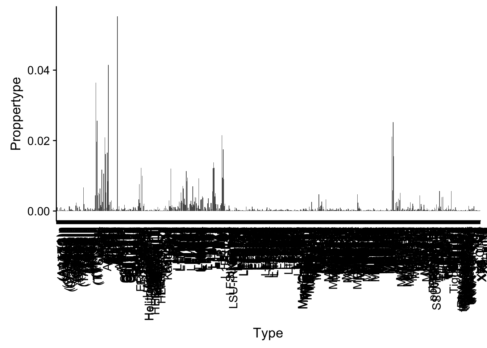

Last updated: 2019-03-01
Checks: 6 0
Knit directory: threeprimeseq/analysis/
This reproducible R Markdown analysis was created with workflowr (version 1.2.0). The Report tab describes the reproducibility checks that were applied when the results were created. The Past versions tab lists the development history.
Great! Since the R Markdown file has been committed to the Git repository, you know the exact version of the code that produced these results.
Great job! The global environment was empty. Objects defined in the global environment can affect the analysis in your R Markdown file in unknown ways. For reproduciblity it’s best to always run the code in an empty environment.
The command set.seed(12345) was run prior to running the code in the R Markdown file. Setting a seed ensures that any results that rely on randomness, e.g. subsampling or permutations, are reproducible.
Great job! Recording the operating system, R version, and package versions is critical for reproducibility.
Nice! There were no cached chunks for this analysis, so you can be confident that you successfully produced the results during this run.
Great! You are using Git for version control. Tracking code development and connecting the code version to the results is critical for reproducibility. The version displayed above was the version of the Git repository at the time these results were generated.
Note that you need to be careful to ensure that all relevant files for the analysis have been committed to Git prior to generating the results (you can use wflow_publish or wflow_git_commit). workflowr only checks the R Markdown file, but you know if there are other scripts or data files that it depends on. Below is the status of the Git repository when the results were generated:
Ignored files:
Ignored: .DS_Store
Ignored: .Rhistory
Ignored: .Rproj.user/
Ignored: data/.DS_Store
Ignored: data/perm_QTL_trans_noMP_5percov/
Ignored: output/.DS_Store
Untracked files:
Untracked: KalistoAbundance18486.txt
Untracked: analysis/4suDataIGV.Rmd
Untracked: analysis/DirectionapaQTL.Rmd
Untracked: analysis/EvaleQTLs.Rmd
Untracked: analysis/YL_QTL_test.Rmd
Untracked: analysis/groSeqAnalysis.Rmd
Untracked: analysis/ncbiRefSeq_sm.sort.mRNA.bed
Untracked: analysis/snake.config.notes.Rmd
Untracked: analysis/verifyBAM.Rmd
Untracked: analysis/verifybam_dubs.Rmd
Untracked: code/PeaksToCoverPerReads.py
Untracked: code/strober_pc_pve_heatmap_func.R
Untracked: data/18486.genecov.txt
Untracked: data/APApeaksYL.total.inbrain.bed
Untracked: data/AllPeak_counts/
Untracked: data/ApaQTLs/
Untracked: data/ApaQTLs_otherPhen/
Untracked: data/ChromHmmOverlap/
Untracked: data/DistTXN2Peak_genelocAnno/
Untracked: data/FeatureoverlapPeaks/
Untracked: data/GM12878.chromHMM.bed
Untracked: data/GM12878.chromHMM.txt
Untracked: data/LianoglouLCL/
Untracked: data/LocusZoom/
Untracked: data/LocusZoom_Unexp/
Untracked: data/LocusZoom_proc/
Untracked: data/MatchedSnps/
Untracked: data/NuclearApaQTLs.txt
Untracked: data/PeakCounts/
Untracked: data/PeakCounts_noMP_5perc/
Untracked: data/PeakCounts_noMP_genelocanno/
Untracked: data/PeakUsage/
Untracked: data/PeakUsage_noMP/
Untracked: data/PeakUsage_noMP_GeneLocAnno/
Untracked: data/PeaksUsed/
Untracked: data/PeaksUsed_noMP_5percCov/
Untracked: data/QTL_overlap/
Untracked: data/RNAkalisto/
Untracked: data/RefSeq_annotations/
Untracked: data/Replicates_usage/
Untracked: data/TotalApaQTLs.txt
Untracked: data/Totalpeaks_filtered_clean.bed
Untracked: data/UnderstandPeaksQC/
Untracked: data/WASP_STAT/
Untracked: data/YL-SP-18486-T-combined-genecov.txt
Untracked: data/YL-SP-18486-T_S9_R1_001-genecov.txt
Untracked: data/YL_QTL_test/
Untracked: data/apaExamp/
Untracked: data/apaExamp_proc/
Untracked: data/apaQTL_examp_noMP/
Untracked: data/bedgraph_peaks/
Untracked: data/bin200.5.T.nuccov.bed
Untracked: data/bin200.Anuccov.bed
Untracked: data/bin200.nuccov.bed
Untracked: data/clean_peaks/
Untracked: data/comb_map_stats.csv
Untracked: data/comb_map_stats.xlsx
Untracked: data/comb_map_stats_39ind.csv
Untracked: data/combined_reads_mapped_three_prime_seq.csv
Untracked: data/diff_iso_GeneLocAnno/
Untracked: data/diff_iso_proc/
Untracked: data/diff_iso_trans/
Untracked: data/eQTLs_Lietal/
Untracked: data/ensemble_to_genename.txt
Untracked: data/example_gene_peakQuant/
Untracked: data/explainProtVar/
Untracked: data/filtPeakOppstrand_cov_noMP_GeneLocAnno_5perc/
Untracked: data/filtered_APApeaks_merged_allchrom_refseqTrans.closest2End.bed
Untracked: data/filtered_APApeaks_merged_allchrom_refseqTrans.closest2End.noties.bed
Untracked: data/first50lines_closest.txt
Untracked: data/gencov.test.csv
Untracked: data/gencov.test.txt
Untracked: data/gencov_zero.test.csv
Untracked: data/gencov_zero.test.txt
Untracked: data/gene_cov/
Untracked: data/joined
Untracked: data/leafcutter/
Untracked: data/merged_combined_YL-SP-threeprimeseq.bg
Untracked: data/molPheno_noMP/
Untracked: data/mol_overlap/
Untracked: data/mol_pheno/
Untracked: data/nom_QTL/
Untracked: data/nom_QTL_opp/
Untracked: data/nom_QTL_trans/
Untracked: data/nuc6up/
Untracked: data/nuc_10up/
Untracked: data/other_qtls/
Untracked: data/pQTL_otherphen/
Untracked: data/pacbio_cov/
Untracked: data/peakPerRefSeqGene/
Untracked: data/peaks4DT/
Untracked: data/perm_QTL/
Untracked: data/perm_QTL_GeneLocAnno_noMP_5percov/
Untracked: data/perm_QTL_GeneLocAnno_noMP_5percov_3UTR/
Untracked: data/perm_QTL_diffWindow/
Untracked: data/perm_QTL_opp/
Untracked: data/perm_QTL_trans/
Untracked: data/perm_QTL_trans_filt/
Untracked: data/protAndAPAAndExplmRes.Rda
Untracked: data/protAndAPAlmRes.Rda
Untracked: data/protAndExpressionlmRes.Rda
Untracked: data/reads_mapped_three_prime_seq.csv
Untracked: data/smash.cov.results.bed
Untracked: data/smash.cov.results.csv
Untracked: data/smash.cov.results.txt
Untracked: data/smash_testregion/
Untracked: data/ssFC200.cov.bed
Untracked: data/temp.file1
Untracked: data/temp.file2
Untracked: data/temp.gencov.test.txt
Untracked: data/temp.gencov_zero.test.txt
Untracked: data/threePrimeSeqMetaData.csv
Untracked: data/threePrimeSeqMetaData55Ind.txt
Untracked: data/threePrimeSeqMetaData55Ind.xlsx
Untracked: data/threePrimeSeqMetaData55Ind_noDup.txt
Untracked: data/threePrimeSeqMetaData55Ind_noDup.xlsx
Untracked: data/threePrimeSeqMetaData55Ind_noDup_WASPMAP.txt
Untracked: data/threePrimeSeqMetaData55Ind_noDup_WASPMAP.xlsx
Untracked: output/LZ/
Untracked: output/deeptools_plots/
Untracked: output/picard/
Untracked: output/plots/
Untracked: output/qual.fig2.pdf
Unstaged changes:
Modified: analysis/28ind.peak.explore.Rmd
Modified: analysis/CompareLianoglouData.Rmd
Modified: analysis/NewPeakPostMP.Rmd
Modified: analysis/apaQTLoverlapGWAS.Rmd
Modified: analysis/cleanupdtseq.internalpriming.Rmd
Modified: analysis/coloc_apaQTLs_protQTLs.Rmd
Modified: analysis/dif.iso.usage.leafcutter.Rmd
Modified: analysis/diff_iso_pipeline.Rmd
Modified: analysis/explainpQTLs.Rmd
Modified: analysis/explore.filters.Rmd
Modified: analysis/fixBWChromNames.Rmd
Modified: analysis/flash2mash.Rmd
Modified: analysis/mispriming_approach.Rmd
Modified: analysis/overlapMolQTL.Rmd
Modified: analysis/overlapMolQTL.opposite.Rmd
Modified: analysis/overlap_qtls.Rmd
Modified: analysis/peakOverlap_oppstrand.Rmd
Modified: analysis/peakQCPPlots.Rmd
Modified: analysis/pheno.leaf.comb.Rmd
Modified: analysis/pipeline_55Ind.Rmd
Modified: analysis/swarmPlots_QTLs.Rmd
Modified: analysis/test.max2.Rmd
Modified: analysis/test.smash.Rmd
Modified: analysis/understandPeaks.Rmd
Modified: analysis/unexplainedeQTL_analysis.Rmd
Modified: code/Snakefile
Note that any generated files, e.g. HTML, png, CSS, etc., are not included in this status report because it is ok for generated content to have uncommitted changes.
These are the previous versions of the R Markdown and HTML files. If you’ve configured a remote Git repository (see ?wflow_git_remote), click on the hyperlinks in the table below to view them.
| File | Version | Author | Date | Message |
|---|---|---|---|---|
| Rmd | 121b023 | Briana Mittleman | 2019-03-01 | enrichment in rep classes |
| html | 19ad929 | Briana Mittleman | 2019-03-01 | Build site. |
| Rmd | f812272 | Briana Mittleman | 2019-03-01 | add erna and rep element analysis |
library(workflowr)This is workflowr version 1.2.0
Run ?workflowr for help getting startedlibrary(tidyverse)── Attaching packages ──────────────────────────────────────────────────────────────────────────── tidyverse 1.2.1 ──✔ ggplot2 3.0.0 ✔ purrr 0.2.5
✔ tibble 1.4.2 ✔ dplyr 0.7.6
✔ tidyr 0.8.1 ✔ stringr 1.4.0
✔ readr 1.1.1 ✔ forcats 0.3.0Warning: package 'stringr' was built under R version 3.5.2── Conflicts ─────────────────────────────────────────────────────────────────────────────── tidyverse_conflicts() ──
✖ dplyr::filter() masks stats::filter()
✖ dplyr::lag() masks stats::lag()library(cowplot)
Attaching package: 'cowplot'The following object is masked from 'package:ggplot2':
ggsavelibrary(reshape2)
Attaching package: 'reshape2'The following object is masked from 'package:tidyr':
smithsCould this be do to repetitive elements
Process: /project2/gilad/briana/genome_anotation_data/RepeatMask.dms
I just need to cut the chr to make the chroms the same as mine
sed 's/^chr//' /project2/gilad/briana/genome_anotation_data/RepeatMask.dms > /project2/gilad/briana/genome_anotation_data/RepeatMask.bed
BothFracDTPlotRepeats_noMPFilt.sh
#!/bin/bash
#SBATCH --job-name=BothFracDTPlotRepeats_noMPFilt
#SBATCH --account=pi-yangili1
#SBATCH --time=36:00:00
#SBATCH --output=BothFracDTPlotRepeats_noMPFilt.out
#SBATCH --error=BothFracDTPlotRepeats_noMPFilt.err
#SBATCH --partition=bigmem2
#SBATCH --mem=100G
#SBATCH --mail-type=END
module load Anaconda3
source activate three-prime-env
computeMatrix reference-point -S /project2/gilad/briana/threeprimeseq/data/mergedBW/Total_MergedBamCoverage.bw /project2/gilad/briana/threeprimeseq/data/mergedBW/Nuclear_MergedBamCoverage.bw -R /project2/gilad/briana/genome_anotation_data/RepeatMask.bed -b 1000 -a 1000 -out /project2/gilad/briana/threeprimeseq/data/LianoglouDeepTools/BothFrac_Repetitive_Nompfilt.gz
plotHeatmap --sortRegions descend -m /project2/gilad/briana/threeprimeseq/data/LianoglouDeepTools/BothFrac_Repetitive_Nompfilt.gz --refPointLabel "Repetitive Regions" --plotTitle "Combined Reads at Repetitive Regions" --heatmapHeight 7 --colorMap YlGnBu -out /project2/gilad/briana/threeprimeseq/data/LianoglouDeepTools/BothFrac_Repetitive_Nompfilt.pngdownload LCL eRNAs from phantom
http://enhancer.binf.ku.dk/presets/
process this file
/project2/gilad/briana/genome_anotation_data/0000945_lymphocyte_of_B_lineage_differentially_expressed_enhancers.bed
interactively in python
inFile=open("/project2/gilad/briana/genome_anotation_data/CL:0000945_lymphocyte_of_B_lineage_differentially_expressed_enhancers.bed", "r")
outBed=open("/project2/gilad/briana/genome_anotation_data/LCLenhancerRNA.bed","w")
for ln in inFile:
chrom=ln.split()[0]
chromnoch=chrom[3:]
start=int(ln.split()[1])
end=int(ln.split()[2])
outBed.write("%s\t%d\t%d\n"%(chromnoch, start,end))
outBed.close()Look at this in total and nuclear three prime seq BW
BothFracDTPloteRNA_noMPFilt.sh
#!/bin/bash
#SBATCH --job-name=BothFracDTPloteRNA_noMPFilt
#SBATCH --account=pi-yangili1
#SBATCH --time=36:00:00
#SBATCH --output=BothFracDTPloteRNA_noMPFilt.out
#SBATCH --error=BothFracDTPloteRNA_noMPFilt.err
#SBATCH --partition=bigmem2
#SBATCH --mem=100G
#SBATCH --mail-type=END
module load Anaconda3
source activate three-prime-env
computeMatrix reference-point -S /project2/gilad/briana/threeprimeseq/data/mergedBW/Total_MergedBamCoverage.bw /project2/gilad/briana/threeprimeseq/data/mergedBW/Nuclear_MergedBamCoverage.bw -R /project2/gilad/briana/genome_anotation_data/LCLenhancerRNA.bed -b 1000 -a 1000 -out /project2/gilad/briana/threeprimeseq/data/LianoglouDeepTools/BothFrac_eRNA_Nompfilt.gz
plotHeatmap --sortRegions descend -m /project2/gilad/briana/threeprimeseq/data/LianoglouDeepTools/BothFrac_eRNA_Nompfilt.gz --refPointLabel "eRNA Regions" --plotTitle "Combined Reads at eRNA" --heatmapHeight 7 --colorMap YlGnBu -out /project2/gilad/briana/threeprimeseq/data/LianoglouDeepTools/BothFrac_eRNA_Nompfilt.pngDo this as region rather than reference point
BothFracDTPloteRNA_noMPFilt_region.sh
#!/bin/bash
#SBATCH --job-name=BothFracDTPloteRNA_noMPFilt_region
#SBATCH --account=pi-yangili1
#SBATCH --time=36:00:00
#SBATCH --output=BothFracDTPloteRNA_noMPFilt_region.out
#SBATCH --error=BothFracDTPloteRNA_noMPFilt_region.err
#SBATCH --partition=bigmem2
#SBATCH --mem=100G
#SBATCH --mail-type=END
module load Anaconda3
source activate three-prime-env
computeMatrix scale-regions -S /project2/gilad/briana/threeprimeseq/data/mergedBW/Total_MergedBamCoverage.bw /project2/gilad/briana/threeprimeseq/data/mergedBW/Nuclear_MergedBamCoverage.bw -R /project2/gilad/briana/genome_anotation_data/LCLenhancerRNA.bed -b 500 -a 500 -out /project2/gilad/briana/threeprimeseq/data/LianoglouDeepTools/BothFrac_eRNA_Nompfilt_regions.gz
plotHeatmap --sortRegions descend -m /project2/gilad/briana/threeprimeseq/data/LianoglouDeepTools/BothFrac_eRNA_Nompfilt_regions.gz --refPointLabel "eRNA Regions" --plotTitle "Combined Reads at eRNA" --heatmapHeight 7 --colorMap YlGnBu -out /project2/gilad/briana/threeprimeseq/data/LianoglouDeepTools/BothFrac_eRNA_Nompfilt_regions.pngDoes not look like there are a strong driver. I will see if any of these overlap with our peaks.I will need to look at the opposite strand overlap or use the fixed strand peaks. I will ask how many of these eRNAs or rep elements overlap a peak.
I want to run the overlap in all of the peaks as well as those that have been filtered 5%
/project2/gilad/briana/threeprimeseq/data/mergedPeaks_noMP_GeneLoc/Filtered_APApeaks_merged_allchrom_noMP.sort.named.noCHR_geneLoc.bed
/project2/gilad/briana/threeprimeseq/data/peaks4DT/Peaks_5percCov_fixedStrand.bed
fix strand for nonfiltered:
fixStrand4DTplots_allpeaks.py
peaksIn="/project2/gilad/briana/threeprimeseq/data/mergedPeaks_noMP_GeneLoc/Filtered_APApeaks_merged_allchrom_noMP.sort.named.noCHR_geneLoc.bed"
PeakOut="/project2/gilad/briana/threeprimeseq/data/peaks4DT/APAPeaks_allPeaks_fixedStrand.bed"
def fix_strand(Fin,Fout):
fout=open(Fout,"w")
for ln in open(Fin, "r"):
chrom, start, end, name, score, strand, score2, pos = ln.split()
if strand=="+":
nameF="peak" + name + ":" + pos
fout.write("%s\t%s\t%s\t%s\t%s\t-\n"%(chrom,start,end,nameF,score))
else:
nameF="peak" + name + ":" + pos
fout.write("%s\t%s\t%s\t%s\t%s\t+\n"%(chrom,start,end,nameF,score))
fout.close()
fix_strand(peaksIn, PeakOut)
ernas: /project2/gilad/briana/genome_anotation_data/LCLenhancerRNA.bed repetitive elements: /project2/gilad/briana/genome_anotation_data/RepeatMask.bed
make a python script with pybedtools that will take any bed file and overlap it
overlapWFilteredPeaks.py
def main(infile, outfile):
peak_file=open("/project2/gilad/briana/threeprimeseq/data/peaks4DT/APAPeaks_5percCov_fixedStrand.bed","r")
peak=pybedtools.BedTool(peak_file)
elementFile=open(infile, "r")
for i,ln in enumerate(elementFile):
if i == 0:
if len(ln.split()) > 3:
strand= "yes"
else:
strand= "no"
else:
break
print(strand)
elements=pybedtools.BedTool(elementFile)
if strand== "yes":
elemOverpeak=elements.intersect(peak, wa=True,wb=True, s=True)
else:
elemOverpeak=elements.intersect(peak, wa=True,wb=True)
elemOverpeak.saveas(outfile)
if __name__ == "__main__":
import sys
import pybedtools
infile=sys.argv[1]
outfile=sys.argv[2]
main(infile, outfile)run:
python overlapWFilteredPeaks.py /project2/gilad/briana/genome_anotation_data/LCLenhancerRNA.bed /project2/gilad/briana/threeprimeseq/data/FeatureoverlapPeaks/FilteredPeak_overeRNA.txt
python overlapWFilteredPeaks.py /project2/gilad/briana/genome_anotation_data/RepeatMask.bed /project2/gilad/briana/threeprimeseq/data/FeatureoverlapPeaks/FilteredPeak_overRepElements.txt overlapWAllPeaks.py
def main(infile, outfile):
peak_file=open("/project2/gilad/briana/threeprimeseq/data/peaks4DT/APAPeaks_allPeaks_fixedStrand.bed","r")
peak=pybedtools.BedTool(peak_file)
elementFile=open(infile, "r")
for i,ln in enumerate(elementFile):
if i == 0:
if len(ln.split()) > 3:
strand= "yes"
else:
strand= "no"
else:
break
print(strand)
elements=pybedtools.BedTool(elementFile)
if strand== "yes":
elemOverpeak=elements.intersect(peak, wa=True,wb=True, s=True)
else:
elemOverpeak=elements.intersect(peak, wa=True,wb=True)
elemOverpeak.saveas(outfile)
if __name__ == "__main__":
import sys
import pybedtools
infile=sys.argv[1]
outfile=sys.argv[2]
main(infile, outfile)
run:
python overlapWAllPeaks.py /project2/gilad/briana/genome_anotation_data/LCLenhancerRNA.bed /project2/gilad/briana/threeprimeseq/data/FeatureoverlapPeaks/AllPeak_overeRNA.txt
python overlapWAllPeaks.py /project2/gilad/briana/genome_anotation_data/RepeatMask.bed /project2/gilad/briana/threeprimeseq/data/FeatureoverlapPeaks/AllPeak_overRepElements.txt How long are each of these
Full eRNA file: 1167 All peak eRNA: 128 Filt peak eRNA: 14
Full rep file: 5298130 All peak rep:52965 Filt peak rep: 9542
For Repetitive seq. I can pull this in here and look at the proportion in each type.
repEl=read.table("../data/FeatureoverlapPeaks/FilteredPeak_overRepElements.txt", col.names = c("repCHR", "repStart", "repEnd", "Type", "length", "repStrand", "peakChr", "peakStart", "peakEnd", "peak", "score", "peakStrand"),stringsAsFactors = F)
repEl_sum= repEl %>% group_by(Type) %>% summarise(NperType=n()) %>% mutate(Proppertype=NperType/nrow(repEl))ggplot(repEl_sum, aes(x=Type,y=Proppertype) ) + geom_bar(stat="identity") + theme(axis.text.x = element_text(angle = 90, hjust = 1))
summary(repEl_sum$Proppertype) Min. 1st Qu. Median Mean 3rd Qu. Max.
0.0001048 0.0001048 0.0003144 0.0014025 0.0008384 0.0552295 To get an expectation for this I will shuffle my peaks around the genome and overlap again.
Do this interactively
import pybedtools
peaks= pybedtools.BedTool("/project2/gilad/briana/threeprimeseq/data/peaks4DT/APAPeaks_5percCov_fixedStrand.bed")
peaks_shuf=peaks.shuffle(genome='hg19')
peaks_shuf.saveas("/project2/gilad/briana/threeprimeseq/data/FeatureoverlapPeaks/shuffled_FilterPeaks.bed")
sort -k1,1 -k2,2n /project2/gilad/briana/threeprimeseq/data/FeatureoverlapPeaks/shuffled_FilterPeaks.bed | sed 's/^chr//' > /project2/gilad/briana/threeprimeseq/data/FeatureoverlapPeaks/shuffled_FilterPeaks.sort.bedoverlapWShuffledPeaks.py
def main(infile, outfile):
peak_file=open("/project2/gilad/briana/threeprimeseq/data/FeatureoverlapPeaks/shuffled_FilterPeaks.sort.bed","r")
peak=pybedtools.BedTool(peak_file)
elementFile=open(infile, "r")
for i,ln in enumerate(elementFile):
if i == 0:
if len(ln.split()) > 3:
strand= "yes"
else:
strand= "no"
else:
break
print(strand)
elements=pybedtools.BedTool(elementFile)
if strand== "yes":
elemOverpeak=elements.intersect(peak, wa=True,wb=True, s=True)
else:
elemOverpeak=elements.intersect(peak, wa=True,wb=True)
elemOverpeak.saveas(outfile)
if __name__ == "__main__":
import sys
import pybedtools
infile=sys.argv[1]
outfile=sys.argv[2]
main(infile, outfile)python overlapWShuffledPeaks.py /project2/gilad/briana/genome_anotation_data/RepeatMask.bed /project2/gilad/briana/threeprimeseq/data/FeatureoverlapPeaks/ShuffledPeak_overRepElements.txt repEl_shuf=read.table("../data/FeatureoverlapPeaks/ShuffledPeak_overRepElements.txt", col.names = c("repCHR", "repStart", "repEnd", "Type", "length", "repStrand", "peakChr", "peakStart", "peakEnd", "peak", "score", "peakStrand"),stringsAsFactors = F)
repEl_shuf_sum= repEl_shuf %>% group_by(Type) %>% summarise(NperType_shuf=n()) %>% mutate(Proppertype_shuf=NperType_shuf/nrow(repEl_shuf)) Join both:
repEl_both=repEl_sum %>% full_join(repEl_shuf_sum, by="Type")
#fill NAs with 0
repEl_both$Proppertype= repEl_both$Proppertype %>% replace_na(0)
repEl_both$NperType= repEl_both$NperType %>% replace_na(0)
repEl_both$Proppertype_shuf= repEl_both$Proppertype_shuf %>% replace_na(0)
repEl_both$NperType_shuf= repEl_both$NperType_shuf %>% replace_na(0)Hyper geometric:
repEl_both_sig= repEl_both %>% mutate(Peak=sum(repEl_both$NperType), Peak_Shuf=sum(repEl_both$NperType_shuf), Chosen=NperType+NperType_shuf) %>% mutate(hyper=phyper(NperType, Peak, Peak_Shuf, Chosen, lower.tail = F)) %>% mutate(sig=ifelse(hyper<.05, "yes", "no")) %>% filter(sig=="yes") %>% arrange(desc(Proppertype))
repEl_both_sig# A tibble: 227 x 10
Type NperType Proppertype NperType_shuf Proppertype_shuf Peak
<chr> <dbl> <dbl> <dbl> <dbl> <dbl>
1 AT_r… 527 0.0552 278 0.0191 9542
2 AluY 396 0.0415 345 0.0237 9542
3 AluJb 348 0.0365 323 0.0222 9542
4 AluJr 245 0.0257 186 0.0128 9542
5 AluJo 188 0.0197 185 0.0127 9542
6 MIRc 148 0.0155 165 0.0113 9542
7 L1PA4 132 0.0138 154 0.0106 9542
8 GA-r… 117 0.0123 24 0.00165 9542
9 L1PA5 117 0.0123 130 0.00892 9542
10 L1PA3 116 0.0122 138 0.00946 9542
# ... with 217 more rows, and 4 more variables: Peak_Shuf <dbl>,
# Chosen <dbl>, hyper <dbl>, sig <chr>write.table(repEl_both_sig, "../data/FeatureoverlapPeaks/RepElementsWShuf.txt", col.names = T, row.names = F, quote=F)
sessionInfo()R version 3.5.1 (2018-07-02)
Platform: x86_64-apple-darwin15.6.0 (64-bit)
Running under: macOS 10.14.1
Matrix products: default
BLAS: /Library/Frameworks/R.framework/Versions/3.5/Resources/lib/libRblas.0.dylib
LAPACK: /Library/Frameworks/R.framework/Versions/3.5/Resources/lib/libRlapack.dylib
locale:
[1] en_US.UTF-8/en_US.UTF-8/en_US.UTF-8/C/en_US.UTF-8/en_US.UTF-8
attached base packages:
[1] stats graphics grDevices utils datasets methods base
other attached packages:
[1] bindrcpp_0.2.2 reshape2_1.4.3 cowplot_0.9.3 forcats_0.3.0
[5] stringr_1.4.0 dplyr_0.7.6 purrr_0.2.5 readr_1.1.1
[9] tidyr_0.8.1 tibble_1.4.2 ggplot2_3.0.0 tidyverse_1.2.1
[13] workflowr_1.2.0
loaded via a namespace (and not attached):
[1] tidyselect_0.2.4 haven_1.1.2 lattice_0.20-35 colorspace_1.3-2
[5] htmltools_0.3.6 yaml_2.2.0 utf8_1.1.4 rlang_0.2.2
[9] pillar_1.3.0 glue_1.3.0 withr_2.1.2 modelr_0.1.2
[13] readxl_1.1.0 bindr_0.1.1 plyr_1.8.4 munsell_0.5.0
[17] gtable_0.2.0 cellranger_1.1.0 rvest_0.3.2 evaluate_0.13
[21] labeling_0.3 knitr_1.20 fansi_0.4.0 broom_0.5.0
[25] Rcpp_0.12.19 scales_1.0.0 backports_1.1.2 jsonlite_1.6
[29] fs_1.2.6 hms_0.4.2 digest_0.6.17 stringi_1.2.4
[33] grid_3.5.1 rprojroot_1.3-2 cli_1.0.1 tools_3.5.1
[37] magrittr_1.5 lazyeval_0.2.1 crayon_1.3.4 whisker_0.3-2
[41] pkgconfig_2.0.2 xml2_1.2.0 lubridate_1.7.4 assertthat_0.2.0
[45] rmarkdown_1.11 httr_1.3.1 rstudioapi_0.9.0 R6_2.3.0
[49] nlme_3.1-137 git2r_0.24.0 compiler_3.5.1